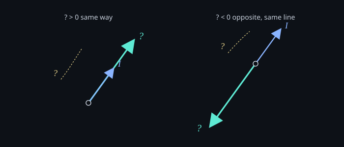

This note was split from a 2021 class note on spin, magnetic moment, and gyromagnetic ratio.
The gyromagnetic ratio (γ) is the constant relating spin angular momentum I to the magnetic dipole moment μ:
μ = γI
Here, I denotes angular momentum, rather than the bare spin quantum number 1/2. The value of γ depends on the nucleus. With a signed γ, a positive value means that μ and the angular momentum point in the same direction, while a negative value means that they point in opposite directions. Most NMR nuclei have γ > 0, but some nuclei and electrons have γ < 0 under this convention.

A practical source of confusion is the unit: γ is usually expressed in rad/s/T, whereas γ/2π is expressed in Hz/T or MHz/T. For a proton, γ/2π is approximately 42.58 MHz/T. These are two ways of reporting the same physical ratio, not two different constants. NIST: definition and units, proton value.
That unit difference matters as soon as we calculate precession. Using γ with B0 gives an angular frequency; using γ/2π gives cycles per second. A quoted positive magnitude may also omit the sign convention, so the units and definition should be checked before inserting a value into an equation.
This connects the three terms from the 2021 class note: spin, magnetic moment, and gyromagnetic ratio. The next note is Larmor precession.
中文
這篇從 2021 年的課間筆記拆分而來，接著看 spin 與磁矩之間的關係。
旋磁比（gyromagnetic ratio, γ）是連結 spin I 與磁偶極矩 μ 的常數：
μ = γI
這個式子裡的 I 指的是角動量，並不是單獨拿量子數 1/2 代入。γ 的數值隨原子核而不同；採用有正負號的定義時，γ 為正代表 μ 與角動量同向，為負則代表兩者反向。多數 NMR 原子核的 γ > 0，但有些原子核與電子在這個慣例下是 γ < 0。
實際查數值時，很容易混在一起的是單位：γ 通常用 rad/s/T 表示，γ/2π 則用 Hz/T 或 MHz/T。質子的 γ/2π 約為 42.58 MHz/T，這兩種寫法描述的是同一個物理比例，並不是兩個不同的常數。NIST：定義與單位、質子數值。
這個區分在計算進動時就會用到：γ 乘上 B0 得到角頻率，γ/2π 乘上 B0 才是每秒幾個週期。另外，有些表格只報正的大小，因此代入公式前，也要確認它採用的正負號慣例。
到這裡，2021 年課間筆記中的 spin、磁矩與旋磁比就連起來了，下一則接著看拉莫爾進動。